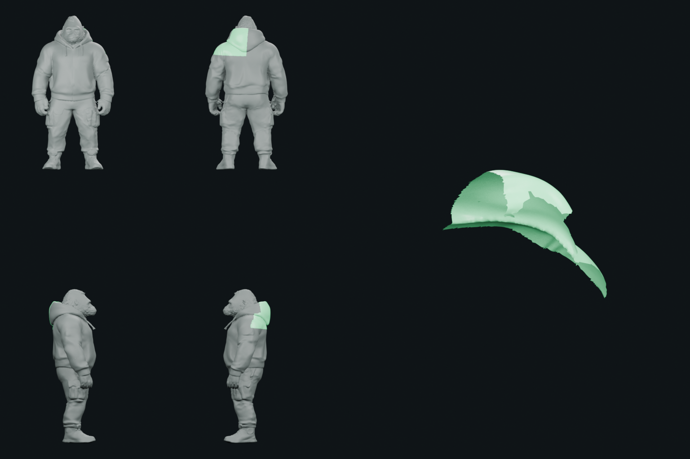

Componente 000
C000-V000000

FRENTE COSTAS ESQUERDA DIREITA DETALHE ISOLADO- Lado provisório
- CENTER
- Vértices
- 5639
- Faces
- 10896
- Grupos dominantes
- head:2354.746516|clavicle.L:1641.841698|upper_arm.L:916.217868|neck:392.055836|chest:242.070202|spine_02:92.067884
- Flags técnicas
- CROSSES_CENTER_PLANE